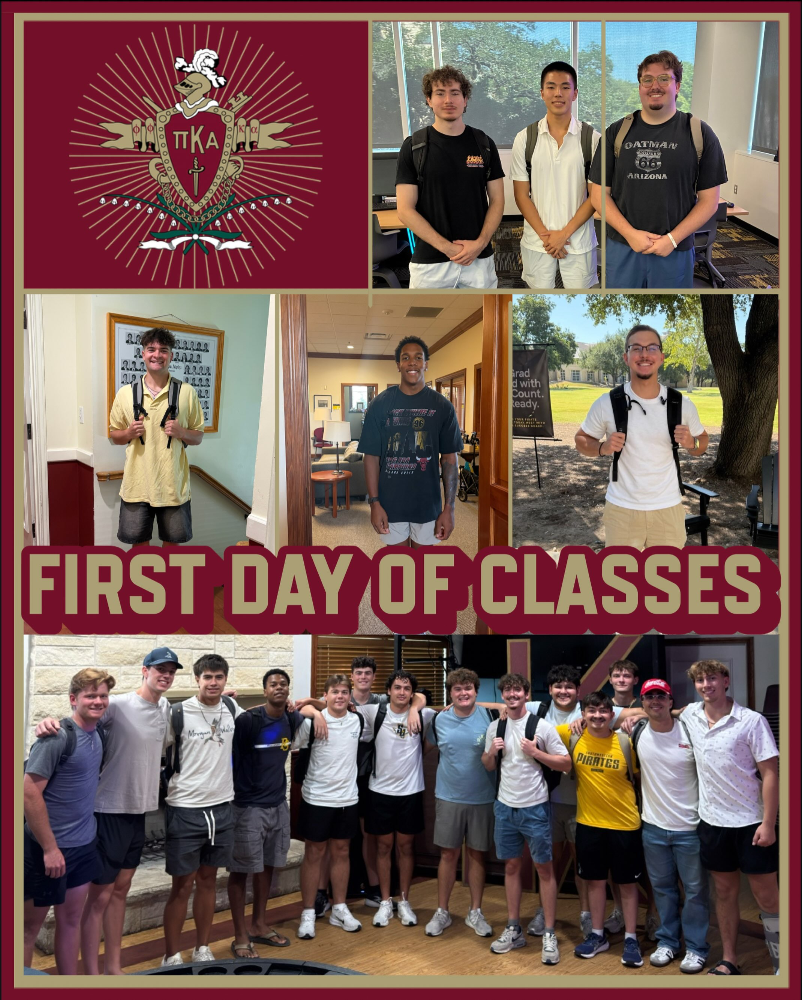

Chapter photograph
Chapter photograph
First day of classes
The Brothers of Pi Kappa Alpha are excited to be back for another semester!
We hope everyone had a great first day of classes and wish y’all the best as the semester gets underway. We’re looking forward to another great year and seeing everyone around campus!
View the post on Instagram